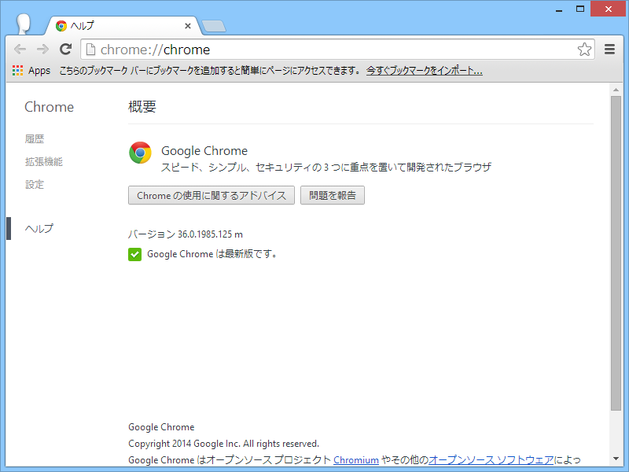
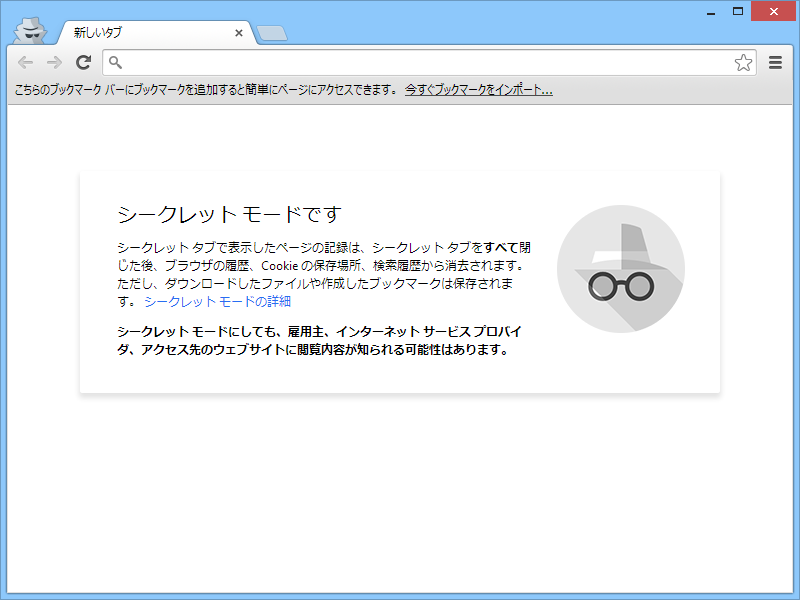
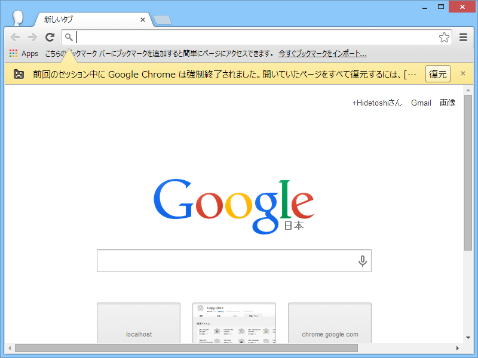
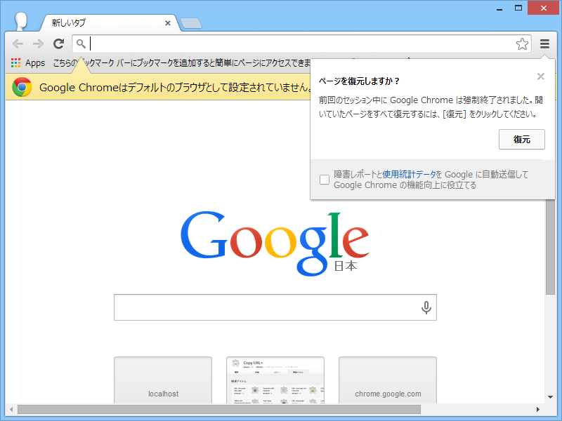

Google Chrome 36.0.1985.125
公開日：

The Chrome Team is excited to announce the promotion of Chrome 36 to the Stable channel for Windows, Mac and Linux. Chrome 36.0.1985.125 contains a number of fixes and improvements, including:
Chrome Releases: Stable Channel Update
- Rich Notifications Improvements
- An Updated Incognito / Guest NTP design
- The addition of a Browser crash recovery bubble
- Chrome App Launcher for Linux
- Lots of under the hood changes for stability and performance

NTP っていうのはどうやら新規タブページ（New Tab Page）のことらしい。Incognito（シークレットモード）は、Chrome OS ではゲスト ブラウジング機能と呼ばれているのだそうな。

“Browser crash recovery bubble”ってのもよくわかんなかったが、どうやらこれは初期状態で無効のようだ。 chrome://flags/#enable-session-crashed-bubble を有効にするとこんな感じになった。

“Rich Notifications Improvements”はイマイチ違いがよくわからんかった。